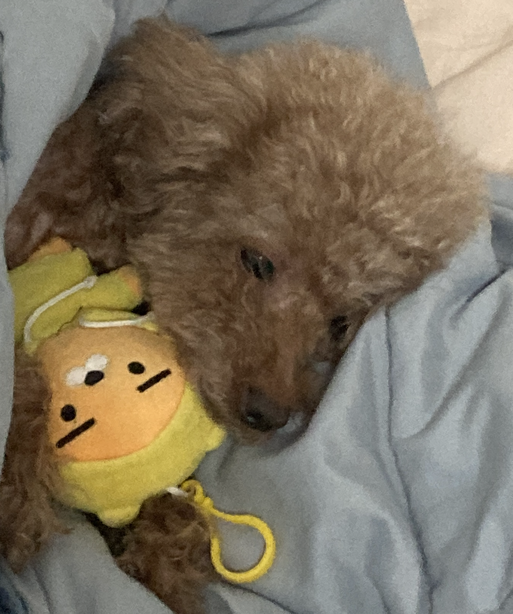
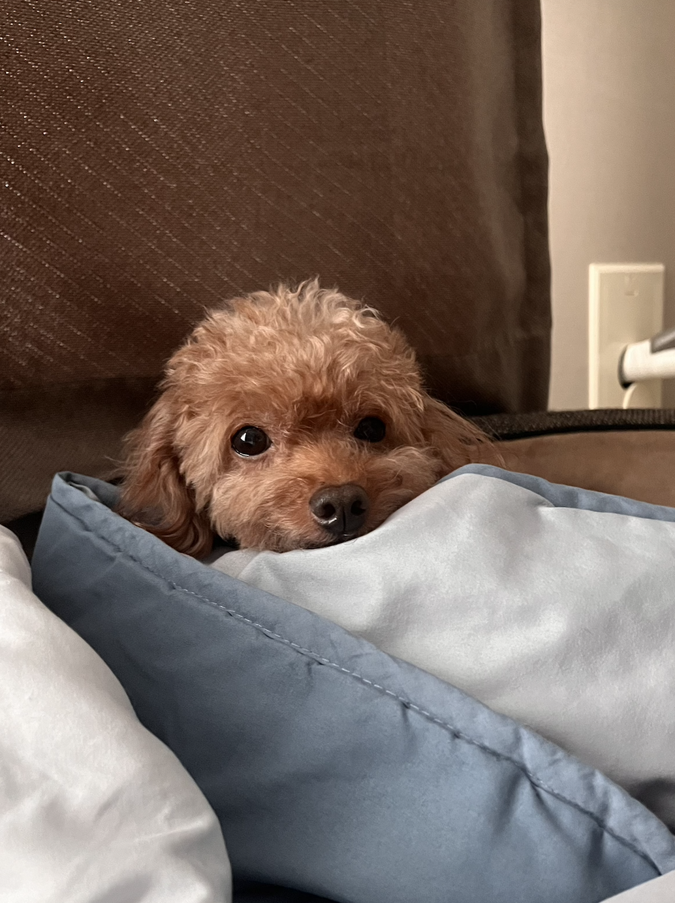

10년을 함께한 코코와의 추억
저희 강아지는 10살 갈색 털을 가지고 있는 토이푸들 코코에요🐩

코코는 흔히 생각하는 '파워 애교' 푸들과는 거리가 좀 멀어요. 평소에는 무뚝뚝한 표정으로 혼자만의 여유를 즐길 줄 아는 아주 시크한 도시 강아지거든요.
인형을 던져주면 신나서 물어올 거라 생각하셨다면 오산입니다. 코코는 절대 가져오지 않습니다.😭 오히려 주인이 인형을 가지러 오게 만드는 고도의 심리전을 즐기죠.

가끔은 제가 코코랑 놀아주는 게 아니라, 코코가 저를 훈련시키는 기분이 들 때도 있어요. 😂 이렇게 쿨한 코코도 무너지는 순간이 있습니다.
본인이 필요할 때는 세상 어디에도 없는 치명적인 애교를 부리며 다가오는데, 그 반전 매력에 매번 속아 넘어갈 수밖에 없답니다.

우리 코코의 유별난 취향 하나, 바로 노란색입니다! 세상의 모든 노란색은 다 자기 것인 줄 아는지, 노란 물건만 보면 눈이 휘둥그레지고 꼬리 모터가 돌아가요ㅋㅋ
어느덧 코코와 함께한 지도 벌써 10년이라는 세월이 흘렀네요. 천방지축이던 예전과 달리 조금씩 나이 들어가는 모습이 보일 때면 마음 한구석이 찡해지기도 합니다. 무뚝뚝하면 좀 어때요? 건강하게만 곁에 있어 준다면 더 바랄 게 없죠.
코코야, 앞으로도 우리 집 '시크 대장'으로 오래오래 함께하자! 사랑해! 🐾

댓글 4